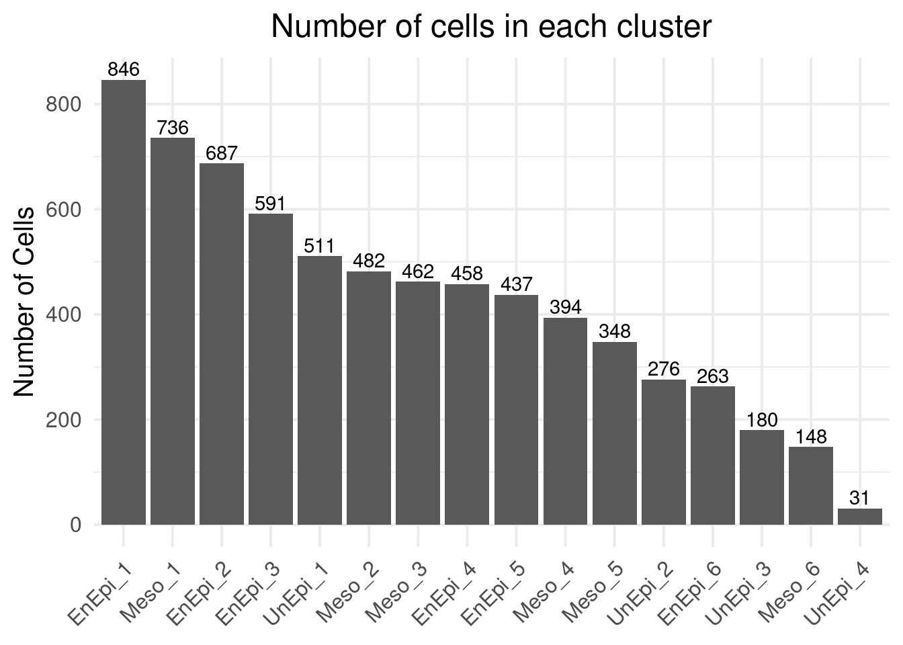
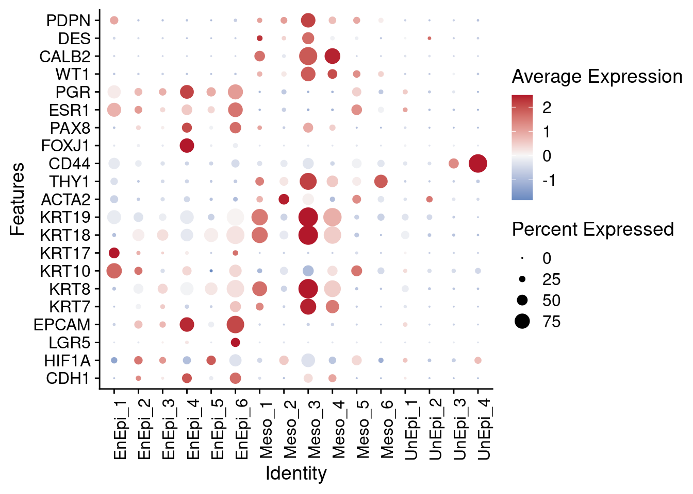
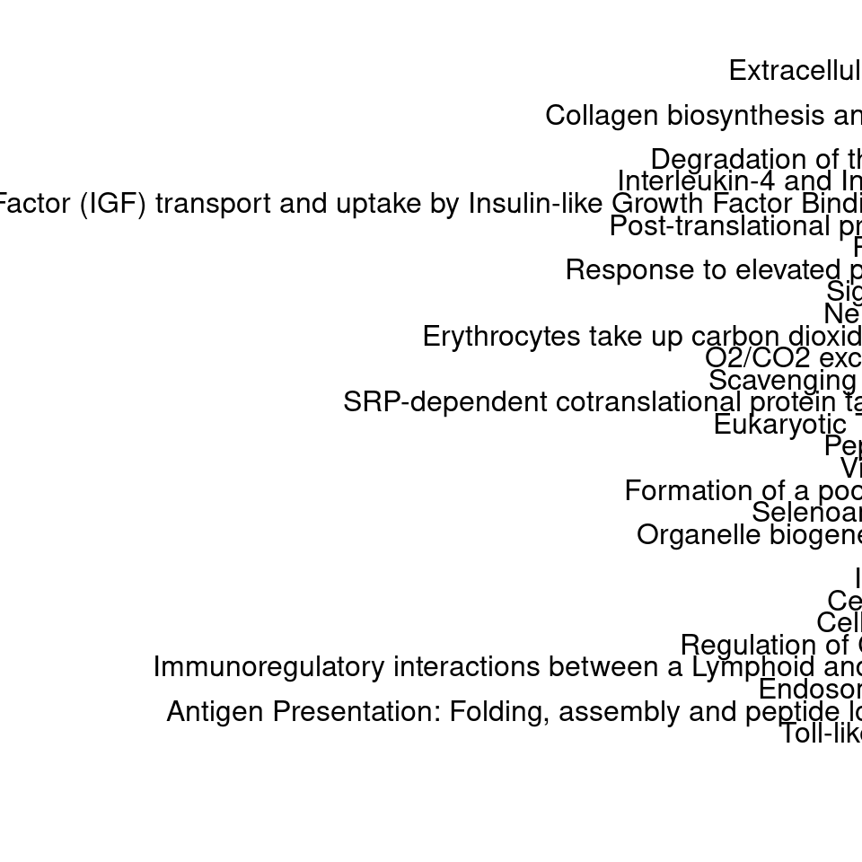
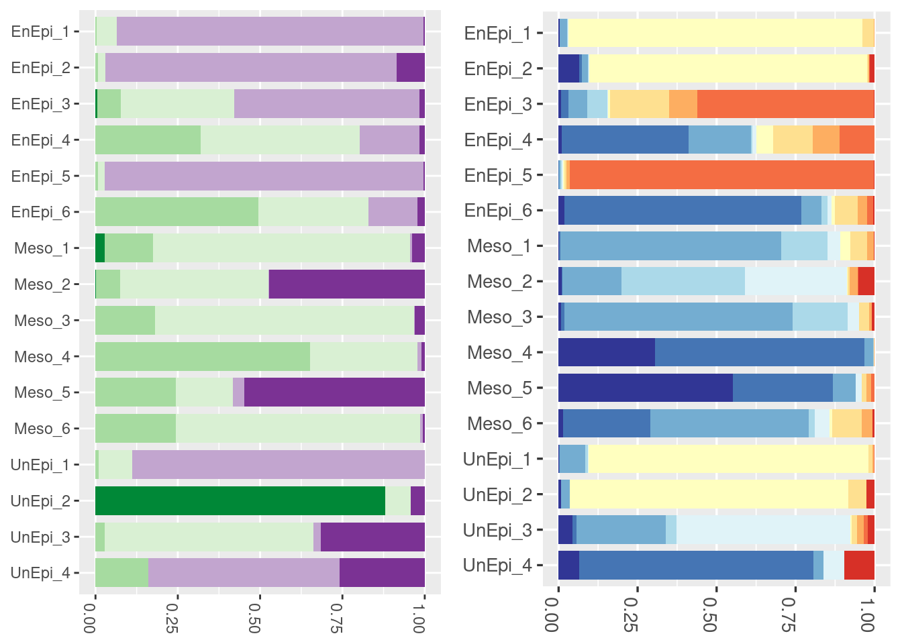

Epithelial cells Analysis
Load cohort annotation file and Epithelial cells Seurat object
epi = readRDS("rds/epithelial.cells.15.clusters.rds")
levels(epi@meta.data$seurat_clusters) <- c("EnEpi_1", "Meso_1", "EnEpi_2", "EnEpi_3", "UnEpi_1", "Meso_2", "Meso_3", "EnEpi_4",
"EnEpi_5", "Meso_4", "Meso_5", "UnEpi_2", "EnEpi_6", "UnEpi_3", "Meso_6",
"UnEpi_4"
)
Idents(object = epi) <- epi@meta.data$seurat_clustersDimPlot(epi, reduction = "umap", label = TRUE)## Warning: Using `as.character()` on a quosure is deprecated as of rlang 0.3.0.
## Please use `as_label()` or `as_name()` instead.
## This warning is displayed once per session.
prop.cells <- data.frame(table(Idents(epi)))
prop.cells$Var1 <- factor(prop.cells$Var1, levels = prop.cells$Var1)
ggplot(prop.cells, aes(Var1, Freq)) +
geom_col() +
theme_minimal(base_size = 15) +
geom_text(aes(label=Freq), position=position_dodge(width=0.9), vjust=-0.25) +
theme(plot.title = element_text(hjust = 0.5),
axis.text.x = element_text(angle = 45, hjust = 1),
axis.title.x = element_blank()) +
labs(title="Number of cells in each cluster", x ="Clusters", y = "Number of Cells")
##
epi@active.ident <- factor(epi@active.ident,
levels=c("EnEpi_1", "EnEpi_2", "EnEpi_3", "EnEpi_4", "EnEpi_5", "EnEpi_6",
"Meso_1", "Meso_2", "Meso_3", "Meso_4", "Meso_5", "Meso_6",
"UnEpi_1", "UnEpi_2", "UnEpi_3", "UnEpi_4")
)selected.features = c("CDH1", "HIF1A", "LGR5", "EPCAM", "KRT7", "KRT8", "KRT10", "KRT17", "KRT18", "KRT19", "ACTA2","THY1", "CD44", "FOXJ1", "PAX8", "ESR1", "PGR", "WT1", "CALB2", "DES", "PDPN")
DotPlot(object = epi, assay = "RNA", features = selected.features) +
theme(axis.text.x = element_text(angle = 90)) +
coord_flip() +
scale_colour_gradient2(low = "#2166ac", mid = "#f7f7f7", high = "#b2182b")## Scale for 'colour' is already present. Adding another scale for 'colour',
## which will replace the existing scale.
epi.markers.df <- FindAllMarkers(epi, test.use = "MAST", verbose = F)
head(epi.markers.df, n = 5)## p_val avg_logFC pct.1 pct.2 p_val_adj cluster gene
## SFRP4 0 2.775324 0.988 0.205 0 EnEpi_1 SFRP4
## PTGDS 0 2.118580 0.953 0.294 0 EnEpi_1 PTGDS
## CXCL14 0 1.740670 0.855 0.047 0 EnEpi_1 CXCL14
## COL3A1 0 1.707823 0.988 0.554 0 EnEpi_1 COL3A1
## COL1A1 0 1.537904 0.994 0.615 0 EnEpi_1 COL1A1res <- compareCluster(gs.ephi, fun="enrichPathway")
clusterProfiler::dotplot(res, showCategory=3)
Panel
plot_grid(plotlist = list.plot, ncol = 2)